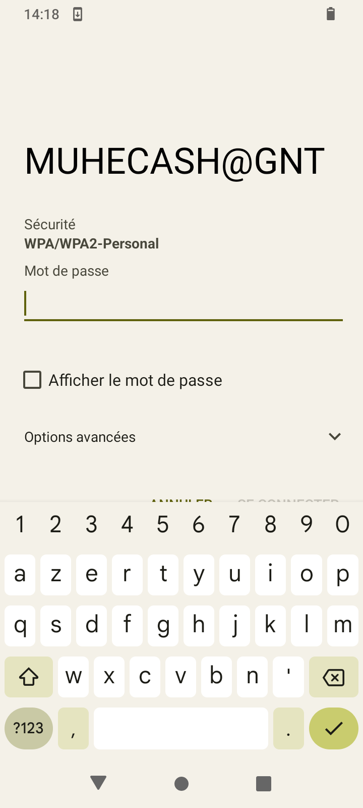
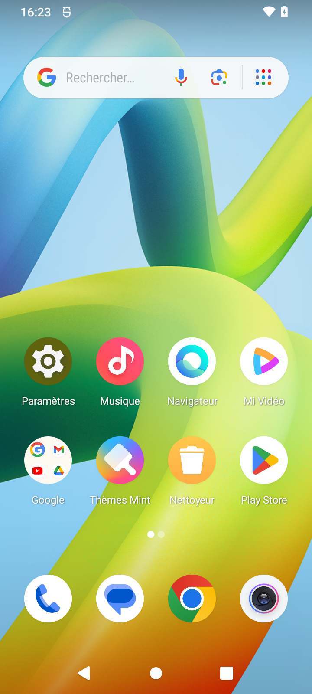
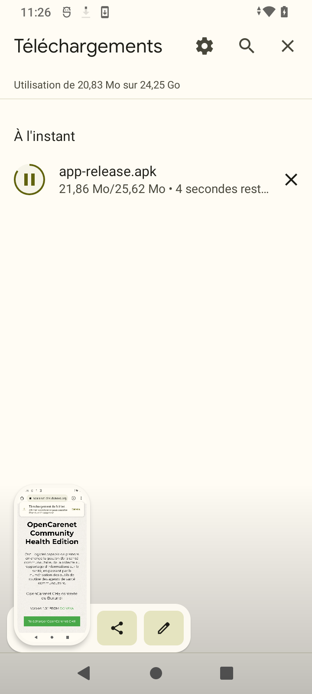
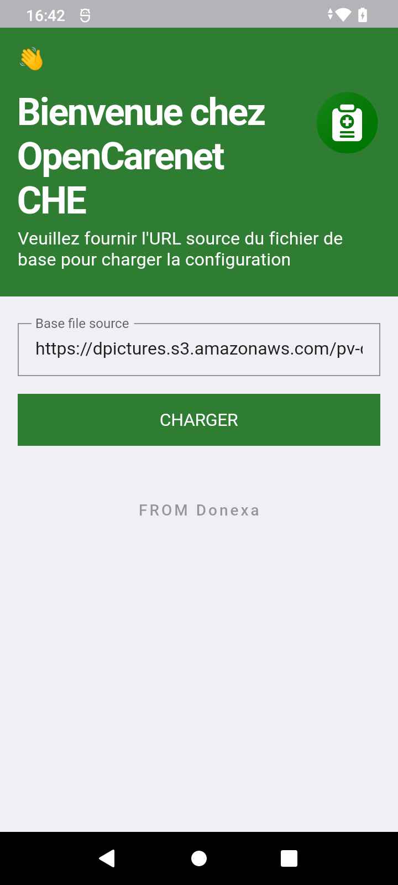

Manuel OpenCarenet CHE
Formation sur l’application OpenCarenet CHE (Contexte du Burundi) dans le cadre du projet Recherche action sur la digitalisation du SIS Communautaire intégrant la surveillance épidémiologique.
À propos de l’application OpenCarenet CHE
L’application OpenCarenet CHE (Community Health Edition) est un outil logiciel capable de prendre en charge la gestion de la santé communautaire, de la collecte au rapportage d'informations sur la santé, en passant par la numérisation des outils de routine des agents de santé communautaire.
Introduction
Il n'y a rien de compliqué à apprendre à utiliser ce logiciel, mais il faut bien comprendre les termes et les concepts utilisés dans le domaine de la santé communautaire au Burundi. Nous vous conseillons d’étudier ce manuel en détail avant d’utiliser le logiciel.
Ce manuel de l'utilisateur offre un aperçu des fonctionnalités de l'application et donne des instructions pas à pas pour la réalisation de diverses tâches.
Configuration Requise
Assurez-vous d'avoir un téléphone Android avant d'installer l'application OpenCarenet CHE. Android? En termes techniques, il s'agit d'un système d'exploitation compatible avec les smartphones et les tablettes. Des nombreuses entreprises fabriquent des appareils Android incluant Samsung, HTC, LG, Tecno, Itel, Redmi et d'autres marques moins connues. Cela explique pourquoi chaque appareil Android est unique - chaque fabricant préfère proposer sa propre interprétation.
Le téléphone doit répond au moins à la configuration système suivante :
| Support | Smartphones |
| Type | Android |
| Version | Version 4.4 et ulterieures |
| RAM | 256 Mo (2Go recommadé) |
| Espace disque disponible | 1 Go |
Dans le cadre de cette formation, nous allons utiliser un téléphone Android de marque Redmi A1, qui répond à toutes les exigences de configuration ci-dessous.
Pour utiliser l'application OpenCarenet, l'utilisateur doit être familier avec les fonctionnalités de base d'un téléphone Android, telles que démarrer/éteindre le téléphone, démarrer une application, saisir un message à l'aide du clavier, etc.
Si vous êtes familier avec les fonctionnalités de base, vous pouvez passer directement à Exploration de l'application. Sinon, nous allons vous donner une brève présentation d'Android qui vous aidera à commencer à utiliser OpenCarenet CHE.
Les premiers pas
En particulier si c'est votre premier smartphone ou tablette, apprendre à utiliser un nouveau téléphone portable peut être très excitant. Il est crucial de commencer par les bases et de procéder graduellement pour éviter d'être submergé
First, make sure you're comfortable with the interface, which includes the screen, some of the built-in apps, and the various gestures you'll use to navigate. Après cela, vous pouvez continuer à effectuer d'autres tâches importantes, comme se connecter à Internet via le Wi-Fi
Compte google
Après avoir allumé votre appareil pour la première fois, vous serez demandé de configurer divers paramètres, tels que votre langue préférée, la date et l' heure, ainsi que votre compte Google, ce qui est le plus important. Pendant le processus de configuration, vous pouvez créer un compte Google si vous n'en avez pas encore.
Il existe plusieurs raisons pour lesquelles cette étape est si cruciale. En résumé, votre compte Google est votre identité sur votre appareil. Il te connecte avec des services cloud, où vous pouvez stocker des éléments tels que des photos et des contacts, ainsi qu'au Play Store, où vous pouvez télécharger des applications. Plus vous utilisez votre appareil, plus vous verrez à quel point votre compte Google est intégré.
Apprendre à connaître votre appareil
Une fois votre appareil configuré, vous devriez être redirigé vers un écran simple avec quelques icônes, boutons et autres fonctionnalités diverses. C'est en fait l'une des parties les plus importantes de votre appareil - c'est ce qu'on appelle l'écran d'accueil - et c'est là que vous stockerez toutes vos applications préférées.
N'oubliez pas que chaque appareil Android est unique. Cela signifie que votre expérience peut varier en fonction de votre téléphone ou de votre tablette.
Applications de base
Prêt à vous lancer dans certaines tâches quotidiennes, comme les e-mails, les SMS ou l’utilisation de l’application OpenCarenet? vous pouvez vérifier votre appareil pour ces applications intégrées de base. Ils peuvent porter des noms légèrement différents selon votre téléphone ou votre tablette, mais les icônes vous donneront généralement un indice
- Téléphone pour téléphoner
- Messages pour la messagerie texte
- Gmail pour gérer votre messagerie, ou Gmail si vous avez un compte Gmail
- Contacts
- Chrome pour naviguer sur le Web (peut également être appelé Internet ou Navigateur)
- Appareil photo pour prendre des photos et des vidéos
- Play Store pour télécharger des applications
- Paramètres pour régler vos paramètres
Certaines de ces applications sont peut-être déjà sur votre écran d'accueil. Si ce n'est pas le cas, jetez un coup d'œil dans votre vue Applications. Cette vue spéciale vous donne accès à toutes les applications de votre appareil. Pour l'ouvrir sur un Redmi A1, faites glisser votre doigt vers le haut.
Gestes de base
Les gestes sont ce que vous utiliserez pour interagir avec l'écran tactile de votre appareil. Par exemple, contrairement à un ordinateur, au lieu de cliquer sur quelque chose avec votre souris, vous touchez l'écran avec votre doigt. Nous ferons référence aux gestes tout au long de ce manuel de l'utilisateur, alors assurez-vous de bien connaître les exemples ci-dessous
- Appuyez pour "cliquer", sélectionner ou ouvrir quelque chose sur votre appareil, comme un bouton ou une application
- Appuyez et maintenez pour accéder occasionnellement à d'autres options (pensez à cela comme un "clic droit" de la souris d’un ordinateur)
- Faites glisser pour faire défiler vers le haut et vers le bas, vers la gauche et vers la droite, ou dans toute autre direction sur l'écran
- Faites glisser votre doigt vers la gauche ou vers la droite pour « feuilleter » des éléments, comme des pages sur l'écran d'accueil, des photos ou des pages d'un livre électronique
- Appuyez deux fois pour effectuer un zoom avant ou arrière dans certaines applications, comme Maps ou Chrome
- Pincez(c'est-à-dire ouvrez ou fermez votre pouce et votre index) pour effectuer un zoom avant ou arrière presque n'importe où
Pour vous connecter au Wi-Fi
Avez-vous accès à un réseau Wi-Fi à proximité (par exemple, à la maison ou au travail) ? Vous pouvez facilement vous y connecter en suivant les étapes ci-dessous. Pour les réseaux auxquels vous accédez à plusieurs reprises, vous ne devez généralement le faire qu'une seule fois. La prochaine fois que vous serez à portée, vous serez automatiquement connecté au réseau, tant que vous laissez la fonction Wi-Fi activée.
1. Assurez-vous d'être sur l'écran d'accueil puis appuyez sur l'icône Paramètres. Vous devrez peut-être parcourir quelques écrans pour le trouver.
2. Jusqu'à ce que vous trouviez la fonction Réseaux et Internet (Mobile, Wi-Fi, point d'accès), faites défiler la liste des paramètres et appuyez sur la fonction.
3. Faites défiler la liste jusqu'à ce que vous trouviez la fonction Wi-Fi. S'il n'est pas déjà activé, appuyez sur le bouton à bascule à droite pour l’activer.
4. Lorsque vous avez terminé, appuyez sur le mot Wi-Fi. Cela ouvrira une liste des réseaux à proximité.
5. Pour rejoindre un réseau, appuyez simplement sur celui que vous voulez. Si le réseau est sécurisé, vous devrez entrer un mot de passe pour vous y connecter. Lorsque vous avez terminé, votre appareil se souviendra des détails du réseau (y compris le mot de passe le cas échéant), afin que vous puissiez vous y connecter automatiquement à l'avenir. Si jamais vous souhaitez modifier ces paramètres, appuyez longuement sur le nom du réseau, puis choisissez Supprimer.
Travailler avec des applications
À ce stade, vous avez allumé votre appareil et tout est configuré. Vous êtes probablement impatient de commencer à l'utiliser, par exemple pour prendre des photos, envoyer des SMS ou utiliser OpenCarenet CHE. Heureusement, ces tâches sont assez faciles. Il vous suffit de savoir quelles applications rechercher.
Trouver une application spécifique
Les applications peuvent être trouvées à deux endroits sur votre appareil. Le premier est l'écran d'accueil, qui devrait inclure par défaut des raccourcis vers plusieurs applications courantes (vous pouvez même ajouter les vôtres). La seconde est la vue Applications, où vous pouvez accéder à toutes les applications sur votre appareil.
Comment télécharger OpenCarenet CHE
1. Connectez-vous au réseau Wi-Fi, au réseau mobile ou à Internet,
2. Rendez-vous sur le site Web officiel de l'application pour le téléchargement https://app.opencarenet-che.donexa.org/ à l'aide de votre navigateur
3. Cliquez sur “Télécharger OpenCarenet CHE” et une boîte de dialogue d'alerte vous alertera que le fichier que vous allez télécharger peut être dangereux. C'est une fonction de sécurité qui empêchera le téléchargement de certains types de fichiers. Pour commencer le téléchargement, cliquez immédiatement sur le bouton "Télécharger"
4. Lorsque le téléchargement est terminé, cliquez sur le fichier qui vient d'être téléchargé dans la liste de téléchargements. une boîte de dialogue peut s'afficher pour vous informer que l'installation d'applications inconnues de cette source sur votre téléphone n'est pas autorisée. Si tel est le cas, cliquez sur le paramètre de la boîte de dialogue, et activez ”Autoriser cette source”.
5. Une fois l'installation terminée, vous pouvez voir l'application dans la vue des applications sous le nom OpenCarenet CHE avec le logo de l'application.
Exploration de l'application
1. L'écran de bienvenue
Lorsque vous ouvrez l'application pour la première fois, une page d'accueil s'affiche, C'est une page qui vous demande de fournir le lien du fichier de base pour charger la configuration de l'application.
Le fichier de configuration est celui qui contient tous les paramètres de l'application selon le contexte du pays par exemple, les registres, les langues, les provinces, etc… Le chargement ne se fait qu'une seule fois, une fois le fichier de configuration chargé, vous ne verrez plus jamais cette page.
Dans le cadre de ce projet, un lien par défaut est déjà rempli dans la zone de saisie. Vous n'aurez qu'à cliquer sur CHARGER pour continuer.
Avant de cliquer sur CHARGER, assurez-vous d'avoir une connexion Internet. Une fois que vous avez cliqué sur CHARGER, un indicateur de chargement apparaîtra à l'écran avec un fond sombre. En cas de succès, vous serez dirigé vers une autre page avec un gros texte : “La collecte de données sur la santé communautaire simplifiée”.
Pour changer de langue, cliquez sur le bouton avec cette icône . Sur plusieurs pages de l'application, vous verrez cette icône. Cliquez dessus et choisissez votre langue préférée pour changer la langue de l'application.
Cliquer sur COMMENCER pour continuer.
2. Paramètres
Il est possible de modifier l’URL du fichier de configuration, l’URL du serveur d’authentification et les clés de nom d'utilisateur et de mot de passe via la page paramètres.Cela facilite le paramétrage de l'application lors du changement d'adresse des serveurs
Dans le cadre de ce projet, des valeurs par défaut ont déjà été remplies dans les zones de saisie. Vous n'aurez qu'à cliquer sur ENREGISTRER pour continuer.
3. Connexion
Pour accéder à l'application, une authentification est requise. c'est-à-dire qu'il faut être reconnu par le système. Votre administrateur doit vous donner les identifiants de connexion que vous utiliserez pour vous connecter.
Dans le cadre de formation; pour tester la connexion, utiliser “test” comme Nom d’utilisateur et Mot de passe. Vous n'aurez qu'à cliquer sur CONNEXION pour continuer.
Si la connexion se passe bien, il vous sera demandé d'autoriser OpenCarenet CHE à accéder à l'emplacement de votre appareil. Ceci est obligatoire pour utiliser le système. En cas de refus, vous ne pourrez pas continuer.
Sur la boîte de dialogue d'alerte vous demandant d'autoriser OpenCarenet à accéder à votre localisation, cliquez sur "LORSQUE VOUS UTILISEZ L'APPLICATION". Une fois l'autorisation approuvée, vous serez dirigé vers la page d'accueil.
4. Page d’Accueil
La page d'accueil est celle qui présente toutes les fonctionnalités de l'application dont la gestion des patients et la gestion des registres.
C'est le haut de la page d'accueil. L'icône de l'application à gauche et à droite des icônes de langue et et un bouton de menu contextuel qui affichera en tant qu’options les boutons Paramètres, Déconnexion et Aide
Les 3 blocs, un en blanc et les 2 restants en vert, permettent d'avoir une vue sur le nombre de patients. Le total, les moins de 18 ans et les plus de 18 ans.
Vous pouvez cliquer sur un bloc pour afficher une liste de patients qui répondent aux critères ; par exemple, si vous cliquez sur "+18 ans", vous ne verrez que les patients qui répondent aux critères.
En haut à droite de la page affichant la liste des patients, il y a un bouton sur lequel vous pouvez cliquer pour enregistrer un nouveau patient et une zone de saisie où vous pouvez rechercher les patients par leur nom.
Pour visualiser les données d'un patient Cliquez sur le patient que vous souhaitez consulter. Une feuille avec toutes ses informations apparaît. Vous pouvez modifier les informations des patients, les supprimer et fermer la feuille en cliquant sur les boutons qui se trouvent en haut de la feuille
Il y a deux boutons dans la section d'accès rapide de la page d'accueil : un pour enregistrer un nouveau patient et l'autre pour consulter les informations d'un patient.
Quand vous cliquez sur la première, vous serez dirigé vers une page d’enregistrement des patients, où vous serez invité à saisir des informations telles que les noms, la date et le lieu de naissance du patient, etc. Quand vous cliquez sur le deuxième, vous serez dirigé vers une page avec une liste de patients. Comme nous l’avons déjà vu, pour visualiser les données d'un patient Cliquez sur le patient que vous souhaitez consulter. Une feuille avec toutes ses informations apparaît. Vous pouvez modifier les informations des patients, les supprimer et fermer la feuille en cliquant sur les boutons qui se trouvent en haut de la feuille.
Toujours sur la page d’accueil, Les registres sont répertoriés dans la section des registres. Ces registres sont des représentations de registres papier. Pour ouvrir un registre,cliquez sur son nom
5. Page d’accueil pour registre
Lorsque vous cliquez sur un registre à partir de la page d'accueil, vous accédez à une page d'accueil pour le registre sélectionné
En haut, le nom du registre est affiché en grand caractère, suivi d'une petite description qui indique quand et pourquoi le registre doit être rempli.
Cliquez sur Remplir pour remplir le registre. Cliquez sur Historique pour afficher l'historique des enregistrements mensuels. Cliquez sur Canevas pour voir le canevas de reporting et les résultats du comptage automatique.
Si vous avez des enregistrements, les 5 plus récents se trouvent en dessous des boutons REMPLIR, HISTORIQUE et CANEVAS.
Chaque élément de la liste des enregistrements a un code du Registre, comme GASC-ECT sur l’image, ainsi que l'heure et la date de l'enregistrement.
Pour voir les détails d'un enregistrement, cliquez dessus.
6. Remplir un registre
Lorsque vous cliquez sur REMPLIR depuis la page d'accueil d’un registre, vous accédez à la page de remplissage du registre. C'est une page où des questions vous seront posées une après l'autre et vous devrez y répondre pour continuer.
Les réponses aux questions sont de différents types. Les entrées varient également de la réponse attendue à une question donnée
Par exemple, sur l'image à droite, on vous demande de sélectionner un patient, c'est pourquoi vous pouvez voir une zone d'entrée faite pour sélectionner un patient
L'application propose cinq autres types de zones d'entrée de valeurs pour les questions, en plus de celle du patient que nous avons vu ci-haut. Ces types sont :
Les nombres
Lorsque la valeur attendue d'une question est un nombre, qu'il soit entier ou décimal, la zone de saisie du nombre sera affichée. Le clavier du téléphone affichera un clavier à chiffre lorsque vous appuyez dessus.
Vrai ou Faux
Lorsque la valeur attendue d'une question est de type Vrai ou Faux, la zone de saisie correspondante sera affichée
Sélection unique :
Il représente un champ avec un menu d'options, qui peut par exemple être des symptômes, des événements, etc. Elle permet de sélectionner un seul choix du menu. L'élément choisi adopte une couleur de fond vert. Sélectionnez ou désélectionnez un élément en cliquant sur lui
Sélection multiple :
Tout comme celui de la Sélection unique, Il représente un champ avec un menu d'option et l'élément choisi adopte une couleur de fond vert à la seule différence, elle permet la sélection de plusieurs options.
Sélectionnez ou désélectionnez un élément en cliquant sur lui.
Text
Lorsque la valeur attendue d'une question est un texte, comme un nom, une observation, un commentaire, etc. la zone de saisie de texte sera ainsi affichée.
Fermer
Vous pouvez voir des boutons de couleur ver avec des labels SUIVANT, PRECEDENT ou ENREGISTRER en dessous des zones d'entrée de valeurs. Ces boutons vous permettent de revenir en arrière ou de passer à la prochaine question. Lorsque vous avez la dernière question devant vous, cliquez sur le bouton ENREGISTRER pour effectuer l'enregistrement.
Si vous cliquez sur le bouton SUIVANT et que vous voyez une barre rouge en bas de votre écran, cela signifie que la question est obligatoire et que vous devez fournir une valeur valide
7. Historique des enregistrements
Vous pouvez consulter l'historique des enregistrements d'un mois d'une année spécifique en cliquant sur HISTORIQUE de la page d'accueil pour un registre. Appuyez sur un élément de la liste pour afficher ses détails. Les données peuvent être filtrées par nom du patient, mois ou année.
8. Le caneva de rapport
Le comptage est automatique. Il vous montre les statistiques en fonction des enregistrements que vous avez. Vous pouvez filtrer les enregistrements par jour, par semaine, par mois en cours, choisir une date ou sélectionner une plage de dates.
Non seulement vous pouvez voir le rapport dans un modèle de rapport officiel mais vous pouvez envoyer votre rapport mensuel à tout moment si vous avez accès à Internet.
Pour envoyer votre rapport, faites défiler les filtres vers la droite jusqu'à ce que vous voyiez le mois et l'année en cours et cliquez dessus
Sur l'écran apparaîtront de nouveaux éléments, tels que des boutons pour synchroniser les données agrégées (votre rapport mensuel) et les données brutes ou non agrégées.
Pour envoyer votre rapport mensuel, cliquez sur "Données agrégées" et "Microdonnées" pour les données brutes ou non agrégées.
EXERCICES
En tant qu'agent de santé communautaire, enregistrer ces cas à l'aide d'OpenCarenet CHE :
1. Sabrina Nshimirimana, née le 16 septembre 2019, dont la mère est Jeanne D'arc Nshimirimana et dont le poids est de 24.5, souffre de diarrhée et de fièvre depuis 2 jours à son domicile situé dans la province de Bujumbura-Mairie, dans la Commune de Mukaza, Quartier Bwiza 6e Avenue No 3.
2. Ndayishimiye Sadjadi, un garçon de 17 ans qui réside dans la province de Muramvya à Rutegama, présente les symptômes suivants : Fièvre, maux de tête graves, douleur aux muscles et aux articulations, sensation de faiblesse et de fatigue, Problèmes de gorge, perte de faim, Les symptômes liés au système digestif, tels que des douleurs abdominales, de la diarrhée et des vomissements, des hémorragies, des saignements ou des ecchymoses inexpliquées
3. Vous avez visité la maison de Mme Sheila Ndayisenga, située au quartier Kigobe dans l'avenue Musasa, dans le cadre de la promotion des bonnes pratiques de lutte contre la malnutrition. La maison dispose d'une bonne toilette, d'une douche et d'une carte CAM. Ce mois-ci, aucun enfant n'est né et tous les enfants de Mme Sheila ont été vaccinés.
4. Vous avez organisé une formation publique pour sensibiliser les jeunes à la santé reproductive. Les participants comprenaient :
| Noms | Sexes | Age |
|---|---|---|
| Régis Ndayisenga | M | 30 ans |
| Mudasubwa Jacques | M | 23 ans |
| Samson Nsengiyumva | M | 31 ans |
| Clemence Chance | F | 25 ans |
| Justin Ntukamazina | M | 27 ans |
| Elvis Ndayishimiye | M | 19 ans |
| Jira Hassan | F | 18 ans |
| Vestine Ndacayisaba | F | 20 ans |